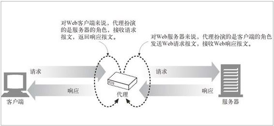
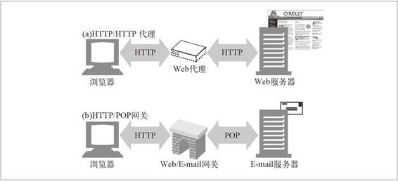

6.1 Web 的中间实体
Web 上的代理服务器是代表客户端完成事务处理的中间人。如果没有 Web 代理，HTTP 客户端就要直接与 HTTP 服务器进行对话。有了 Web 代理，客户端就可以与代理进行对话，然后由代理代表客户端与服务器进行交流。客户端仍然会完成对事务的处理，但它是通过代理服务器提供的优质服务来实现的。
HTTP 的代理服务器既是 Web 服务器又是 Web 客户端。HTTP 客户端会向代理发送请求报文，代理服务器必须像 Web 服务器一样，正确地处理请求和连接，然后返回响应。同时，代理自身要向服务器发送请求，这样，其行为就必须像正确的 HTTP 客户端一样，要发送请求并接收响应（参见图 6-1）。如果要创建自己的 HTTP 代理，就要认真地遵循为 HTTP 客户端和 HTTP 服务器制定的规则。
6.1.1 私有和共享代理
代理服务器可以是某个客户端专用的，也可以是很多客户端共享的。单个客户端专用的代理被称为私有代理。众多客户端共享的代理被称为公共代理。
公共代理
大多数代理都是公共的共享代理。集中式代理的成本效率更高，更容易管理。某些代理应用，比如高速缓存代理服务器，会利用用户间共同的请求，这样的话，汇入同一个代理服务器的用户越多，它就越有用。
私有代理
专用的私有代理并不常见，但它们确实存在，尤其是直接运行在客户端计算机上的时候。有些浏览器辅助产品，以及一些 ISP 服务，会在用户的 PC 上直接运行一些小型的代理，以便扩展浏览器特性，提高性能，或为免费 ISP 服务提供主机广告。

图 6-1 代理既是服务器，又是客户端
6.1.2 代理与网关的对比
严格来说，代理连接的是两个或多个使用相同协议的应用程序，而网关连接的则是两个或多个使用不同协议的端点。网关扮演的是“协议转换器”的角色，即使客户端和服务器使用的是不同的协议，客户端也可以通过它完成与服务器之间的事务处理。
图 6-2 显示了代理和网关之间的区别。
图 6-2a 中的中间设备是一个 HTTP 代理，因为代理与客户端和服务器之间使用的都是 HTTP 协议。
图 6-2b 中的中间设备是一个 HTTP/POP 网关， 因为它把 HTTP 的前台与 POP E-mail 的后端连接了起来。网关将 Web 事务转换成适当的 POP 事务，这样用户就可以通过 HTTP 读取 E-mail 了。基于 Web 的 E-mail 程序，比如 Yahoo! 邮件 和 MSN Hotmail 都是 HTTP E-mail 网关。

图 6-2 代理使用同一种协议，网关则将不同的协议连接起来
实际上，代理和网关之间的区别很模糊。由于浏览器和服务器实现的是不同版本的 HTTP，代理也经常要做一些协议转换工作。而商业化的代理服务器也会实现网关的功能来支持 SSL 安全协议、SOCKS 防火墙、FTP 访问，以及基于 Web 的应用程序。我们将在第 8 章详细介绍网关。